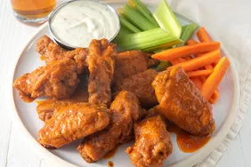

Fried Chicken Wings

Fried wings are a great dish to make for gatherings and football games.
Impress your guests with this delicous dish and make them lick their fingers.
This is obviously my favorite to go dish for all sport gatherings here at my house.
After a little practice, you too can become a fried wing master and your
friends will remember all your gatherings and games.
Ingredients
- Raw chicken wings
- Hot season rub (or home made)
- Peanut Oil
- Frier
- Sides
Cooking Directions
- Preheat the fier to 350 degrees
- prepare wings and dry them
- arrange them in the drop basket
- Drop them very slow and carefully in the oil
- Once they are done, batter them in the rub
- Cut all sides
- Shake wings well so they are evenly seasoned
- Eat and enjoy the gathering with friends
go to main page.